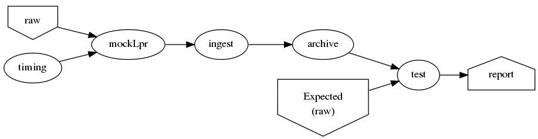
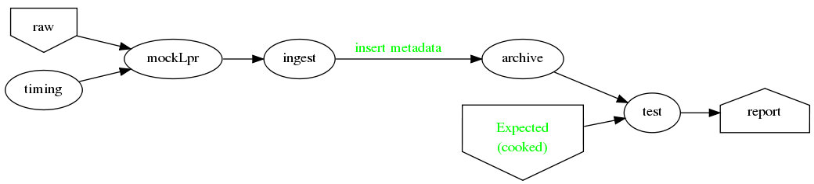
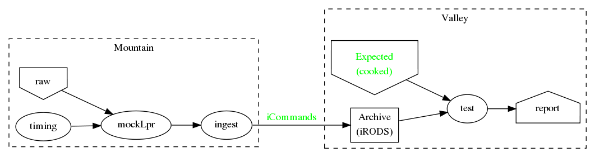

TADA (Telescope Automatic Data Archiver) SDD
Table of Contents
About this document
This document is intended for system software developers and maintainers. It may also be shared with decision makers to provide a common context including requirements, goals, and plans. The primary audiance is employees of NOAO, but an attempt was made to keep it general enough for use in other domains.
Overview
The software described here is: TADA (Telescope Automatic Data Archiver) The purpose of TADA is to provide an end-to-end flow of data from telescope instruments to archives at machines around the world. By its very nature, TADA is a multi-machine system. A more general formulation of the purpose might be:
Collect data from remote instruments and save in nearby cache. Transfer cache data to a local archive, removing cache data after it has been successfully transfer.
This System Design Document (SDD) attempts to describe software as built. Since the document and software are being written at the same time, they may not match until the project is completed. (Maybe not even then! If in doubt ask me (Steve P).
The project must proceed without the benefit of known requirements. Therefore, development will proceed with a series of alpha releases that represent various "threads through the system". Each thread may contain arbitrary amounts of mockup code but will at the very least simulate the end-to-end flow of data. Later alpha-versions will contain progressively more real (non-mockup) components. The first beta release will contain no-mockup for the thread but may contain mocked up modules on either side of the thread. e.g. A mockup will pretend to be telescope instruments sending data.
At each alpha-release, stake-holders have the opportunity to affect what is done for the next release. Its very important for stake-holders to provide prompt feedback. In the absence of such feedback, developers will simply guess on what is important next and move on.
We refer to "mountain" and "valley" sites/machines. These aren't necessarily to be taken literally. "Mountain" means the computer(s) connected to telescope instruments directly or through LAN. The connection is assumed to be very unlikely to be lost unless the instruments and computers go down also. "Valley" emans the computer(s) far away from the telescope instruments and connected only the internet.
The software described here is intended to solve a general problem – collecting remote data and storing in an archive without loss in the face of failures in hardware and software. But the document focuses on that problem in a more specific domain (optical astronomy data). Where there are domain specific issues, they will be described elsewhere but links retained from this document to those domain specific issues.
Config
iinit
irodsHost valley irodsPort 1247 irodsUserName rods irodsZone tempZone
irod directory structure
/sd_zone/
from_cache/
for_archive/
As-Built
This section documents specific builds. When a requirement or feature is described outside of the As-Built section, it should be considered a future possibility, not something that has been implemented.
I record dated sub-sections below but will typically hide all but the most recent. Ask if you want it for some reason.
Changes from iDCI
- All files "printed" from telescope are sent to valley.
Thread-2: Touches FITS data (verifies selected metadata in archive)
Given a "source directory" tree that may contain FITS files,
Open Issues
- Which files from input list ("printed" files) should get moved to archive?
- DEFAULT ANSWER: only *.fitz.fz
- What if a FITS file does NOT contain minimum required metadata?
- DEFAULT ANSWER: Reject file, move to remediation store, log error
- What is the minium required metadata?
- DEFAULT ANSWER: Presence of following fields in FITS hdr without
regard to their value:
- DATE-OBS
- DTACQNAM
- DTINSTRU
- DTNSANAM
- DTPI
- DTSITE
- DTSITE
- DTTELESC
- DTTITLE
- DTUTC
- PROPID
- DEFAULT ANSWER: Presence of following fields in FITS hdr without
regard to their value:
Sprint user stories
These are the expect outcomes from progressively more complex scrum sprints.
In our case "user" means two kinds of people:
- scientist that want access to data,
- SDM DevOps employees that need to manage the process
Thread-1: Establishes file move to archive and test
This is minimal "thread through the system" starting at raw-data and terminating with files in the archive.
[X]mock-LPR; Feed each file in list to Ingest after random delay[X]Ingest; Copy file into mock-IRODS (a local filesystem)[X]Test; Verify all input files are in mock-IRODS

Thread-2: Touches FITS data (verifies selected metadata in archive)
[X]all of Thread-1[X]only transfer files matchin: *.fits.fz[X]insure minimum (level 0) set of required metadata fields in FITS- minimum acceptable for archive
- On inadequate metadata:
[X]reject (don't archive)[ ]move to remediation store[ ]log error
[X]Test; Verify all files in mock-IRODS contain required metadata;

Thread-3: Split into 2 machines, use iRODS client/server
[ ]mock-LPR; Feed each file in list to Ingest after random delay[ ]Ingest; add file to iRODS1 on remote machine[ ]Verify integrity of file across machines (checksum)- Retry N times if integrity violated
[ ]Test; Verify all iRODS filesystem contains everything from orig filesystem

LATER
- easy to add plugins for scientists
- scientist provides program to run against (filtered) set of images, stores "result" file accessable in archive
Classes of supporting machines (hosts)
- T
- Telescope; The machine from which observer does the "print". We can't touch this except to add a printcap entry.
- M
- Mountain cache; Contains all instrument data that hasn't successfull made it into the archive. And maybe some that has.
- V
- Valley; The first stop of data coming from Mountain
- A
- Archive; the final resting place of the data made available to scientists. We can't touch this directly. Only by "submit to ingest".
Roughly, data flows top to bottom through the classes of machines listed above. Meaning data is generated at the Telescope, gets collected at Mountain cache, then transfered to the Valley, and finally cleaned in submitted to the Archive.
There are more than one instance of each of these classes of hosts, so things get a little more complicated with regard to collecting and distributing.
Here's a rough schematics of what we end up with. Arcs represent data flow. Note that data only flows bewteen "adjacent" classes of hosts.2

Goals
Secondary Goals
My primary goal is to develop useful software. Exactly what that software will be is unfolding. It has to be an iterative process. But regardless of what the software is, there are some secondary goals that go along with it. Here are most of them:
- Documentation as built
My intent is to provide "as built" design and code documentation. Code documentation will be generated directly from annotated code. Design docs will be hand written, with diagrams. It will include example runs with inputs and outputs listed. The intended reader for both is someone that is software tech savvy.
- Requirements addressed in software as built
Whatever I develop is intended to address some requirements that I have in mind. I'll put those down in a document. These may be different than any requirements anyone gives to me because they will be directly focused on functionality of the software I develop, rather than on a larger system perspective (which I may have little control over). The intended reader is management and/or software engineer.
- Tests
Each package I write has a "smoke test". This is a simple script that can be run by anyone after the software is installed to see that it works in some fashion. My smoke tests are not exhaustive regression tests. They are intended to be used by developers to ask the question: "did I break anything with the last change". Smoke tests include their own test data and are checked into configuration management with the code.
- Configuration Management
All my software will be checked into github or bitbucket. Related documentation will be included with the code.
- Auto provisioning of everything I develop
I'll provide a "vagrant box", or similar, for all my stuff. This will allow a new Virtual Machine(s) to be created from scratch and all my stuff installed on it such that my smoke tests will work on the new VM(s).
- Documentation of existing system
In the process of figuring out what my new stuff has to do, I have to figure out what the existing stuff does. I don't want to attempt to hold all that in my head, so I document it. You've all seen at least part of my DCI "notes". That is basically the source of what I'm talking about here. I don't intend to formalize it any way unless forced into it. I think it would be too time-consuming/expensive for me to do and I think I have more the enough technical work on my plate. But I will provide at least a crude extraction from my notes to something that might be useful to others. The effort I put into such depends on feedback from you. No feedback means I'll provide something that is a similar level of informality as the notes I've already shared with you. I've already exported some parts of that (like my diagram) to the opswiki.
- Keep It Super Simple
Work very hard to keep the structure of the system and code simple. If there is a temptation to "optimize", make sure its worth it. To be worth it, there must be an existing case of inadequate performance and a requirement must exist to perform at a quantifiable level that the better than the current one. Before changing code, measure the system to identify where the ill performing area is. Don't add optimatizations unless they are proven to help meet requirements.
Requirements
General systemic requirements
- Provide all required the functionality of system this replaces
- Resilient
- don't break – EVER
- Maintainable
- by new employees without large learning curve
- Operate fast enough (need quantification)
Candidate requirements
These requirements have not been committed to. In many case they need to be made more precise.
- All database clients must be capable of reconnecting to database servers on connection loss (so components can be restarted)
- Increase level of automation of regular operation functions
- use version control always; with commit comments
- elliminate direct changes to live production system (from tagged version)
- (document minimumaly acceptable coding style)
- Implement regression testing (automated where possible, documented otherwise)
- write design documentation
- write installation documentation
- write usage documentation
- reproducible installs
- daily operations must not require manual intervention
- daily operations must not require human monitoring (automatic alerts instead)
- eliminate metadata remmediation in its present form (what form???)
- get metadata from file format, or
- get metadata from TO/observer/observatory support staff at data collection time
- insert "archival metadata" just before final archiving (???)
- insert of archival metadata should be idempotent
- eliminate mountain copy coherency requirement (???)
- filename agnostic; nothing in the system should depend on the structure or uniqueness of a filename
- limit access to internals connection points (ports, databases)
- perhaps by host, port, user
- literate programming: data flow software and config files: must be able to auto generate a document that describes the flow (including connectivity or data-flow diagram).
- Continue to store on mountain if connection to valley is severed.
- How long? [DEFAULT ANSWER: 7 days]
- Automatically dump stored mountain data to valley when connection restored
- Mountain machines run unattended. Disk "never" overflows.
- Data that has been successfully transfered to valley is deleted from mountain.
- If connection to valley remains severed for extend time and data continues to be collected on mountain, data will be lost. How? [DEFAULT ANSWER: oldest will be thrown away first]
- Data submitted to NSA (archive) must have PROPID that is in the NSA
metadata-DB
- How is NSA metadata-DB retrieved
- What if PROPID is not in metadata-DB? [DEFAULT ANSWER: File is moved to remediation store; error logged; no ingest happens]
- Handle "typical" failure modes gracefully with no loss of data:
- reboot of any machine at any time [IMPORTANT - automate test?]
- Lost of DNS
- filesystem corruption (within "reason")
- Verify no errors on submit of file to archive (NSA) via socket
- How?
- What does NSA return back? Does it return error for every case in which file is not archived?
- Same version of iRODS in TADA as NSA?
- Not required if API is identical for used commands.
- iRODS says that version 3.+ and 4.+ can be combined in one collection
- Security ???
- firewalls configured to only allow access to key ports from trusted hosts
- Files must be renamed according to TBD scheme before submit to
archive
- How is name derived?
- Assume name is derived from header – but this limits to processing of FITS (known header info) only.
- allow disabling of auto cache-file expiration
- on "submit to archive" retry N times (N given by config file)
- tests to include simulation of irods stop-delay-start
From 2010 iDCI project definition
(minor editing done on language of requirements)
iDCI: Integrated Data Cache Initiative Version 0.1 (02/24/2010) The [[http://chive.tuc.noao.edu:8080/DPPDOCS/operations-documentation/software-system/application-components/noao-e2e/e2ev1.5/iDCI_project_definition.pdf/at_download/file][PDF]] contains a bit more detail on each requirement.
Status below is per Irene. Some might not be true anymore.
- Retain the existing DCI configuration, physical and logical
resources.
Status: Satisfied
- [-sp-] Need to retain physical resources, but why the logical ones?
- Implement design changes that lower Operations maintenance while maintaining the overall functionality of the existing DCI. Status: Not Satisfied
- Provide an interface for external E2E boundary objects.
Status: Satisfied
- [-sp-] I don't see a well defined/documented interface.
- Guarantee the reliable and immutable transfer of data between all start and
end points controlled by the iDCI.
Status: Satisfied
- [-sp-] Not happening, unless requirement allows for manual fudging
- Maximize use of available bandwidth for bulk data transfer without
interfering significantly with normal network traffic.
Status: Satisfied
- [-sp-] Why? Certainly not "maximized" (maybe "improved")
- Persist the state of pending data transfers across network outages, system
failures and unexpected crashes of the software, recovering automatically once local or
remote services become available.
Status: Satisfied
- [-sp-] Not happening. People regularly have to start/restart pieces.
- Be configurable to as to provide flexible routing of data to alternate sites.
Status: Satisfied
- [-sp-] At what touch point? I don't see any way of doing this simply by changing a config file.
- Provide a means to monitor and change the state of the system by operations staff. Status: Not Satisfied
- Provide a choice of transfer protocols to be used, allowing the operator
to choose a protocol
Status: Somewhat Satisfied
- [-sp-] Why? What is the operational requirement hidden in this? Speed? Bandwidth? Quantify.
TADA migration from 2010 iDCI project requriements
- Retain existing physical resources
- ACCEPTED. Improve upon iDCI. Qualify. Quantify
- REJECTED. Except: will submit ingest to archive
- ACCEPTED. Improve upon iDCI. Qualify. Quantify
- REJECTED. If there is a bandwidth requirement, add as such.
- ACCEPTED with caveats.
- REJECTED. Not a requirement, but a goal I expect to happen.
- REJECTED. Not clear.
- REJECTED. No need.
Meta data required for ingest into archive
[ ]PROPID[ ]DATE-OBS[ ]DTTITLE[ ]DTACQNAM[ ]DTNSANAM[ ]DTINSTRU[ ]DTTELESC[ ]DTSITE[ ]DTUTC[ ]DTPI[ ]DTSITE
MVP - Minimally Viable Product
These are the absolute minium requirements for a DCI replacement. When ever possible, avoid putting anything here that is an absolutely essential requirement. (push "would be nice" stuff into subsequent release)
- Baring fatal hardware failure, every file produced by instrument gets into archive
Release 2
- Each site is "independent"
- What is a "site"?
- How independent do they have to be? (archive depends on telescope, for instance)
- Must be able to re-route around broken machines
- Allow institutions direct access to iRODS data ("back-door")
Deferred requirements
- Dashboard for monitoring health of TADA system
- web based
- Support for analytics
- shared results (algorithms run against data from archive)
- loose coupling of archive data to results
- auto expire of results (warning 1, warning 2, delete)
Open Issues
Which files from input list ("printed" files) should get moved to archive?
[ ]All of them?[ ]*.fits.fz?[ ]*.fits?[ ]*.hdr- DEFAULT ANSWER: only *.fitz.fz
What if FITS files do NOT contain minimum required metadata (fields/values)?
- Insert dummy (not realistic) values.
- Calculate values. How?
- Reject file (report and do not archive)
- DEFAULT ANSWER: Reject file, move to remediation store, log error
What are the expected workflows?
For instance:
- Load Proposal ID, etc.
- Reingest remediated files. a) mountain, b) valley
Closed Issues
<NONE>
Assumptions
- Number of users of an instances of this system is very small (under 20). "Users" in this case are data-managent operators of some sort. People that make sure the data is still flowing and correct problems as they come up (which should be very rare).
DEFERRED
(mountain) copy and morph
Copy the files from the ASTRO created file structure into a structure that mirrors the old iDCI directory tree.
/mtncache/fits/<DATE>/<TELESCOPE>/<PROPID>/<datafile>
This will require reading FITS header to get the fields and some may not even be there. Implications: more software packages to load, more edge conditions. This should be done as a complete seperate process. I won't break anything else since its just grabbing a copy and stashing it.
FPACK before transmit from Mountain to Valley
Compress FITS files before transmitting. Since we use irsync (as of this writing) to move files from M->V, this needs to be done in place for all non-compressed FITS files in the directory tree before the irsync is done.
sdpost writes to /tmp/mountaincache
Might be better to write to non-/tmp directory. But there are security issues related to such which I didn't spend the time to understand. Just setting the setuid bit of the backend end
sudo chmod u+s /usr/lib/cups/backend/sdpost
is not good as CUPS traps such as a potential security hole.
Other cleanup needed in sdpost. See reference files at top of script.
Release checklist
Maintainability
[ ]Documentation as built[ ]Requirements addressed in software as built[ ]Tests[ ]Configuration Management[ ]Auto provisioning of everything I develop[ ]Documentation of existing system
Footnotes:
In the NOAO case, these hosts map to the following: T1=Mayall 4m, M1=Kitt Peak, V1=Tucson, T2=SOAR, T3=Blanco 4m, M2=Cerro Pachon, M3=Cerro Tololo; V2=La Serena
SDM is responsibly managing data, nothing is being lost, its going where it should, rates and sizes of data are as expected, manual intervention is not required except in the most unusual circumstances (expected 2-4 times per YEAR). Code changes can be made with courage, without doubt or fear of breaking something.